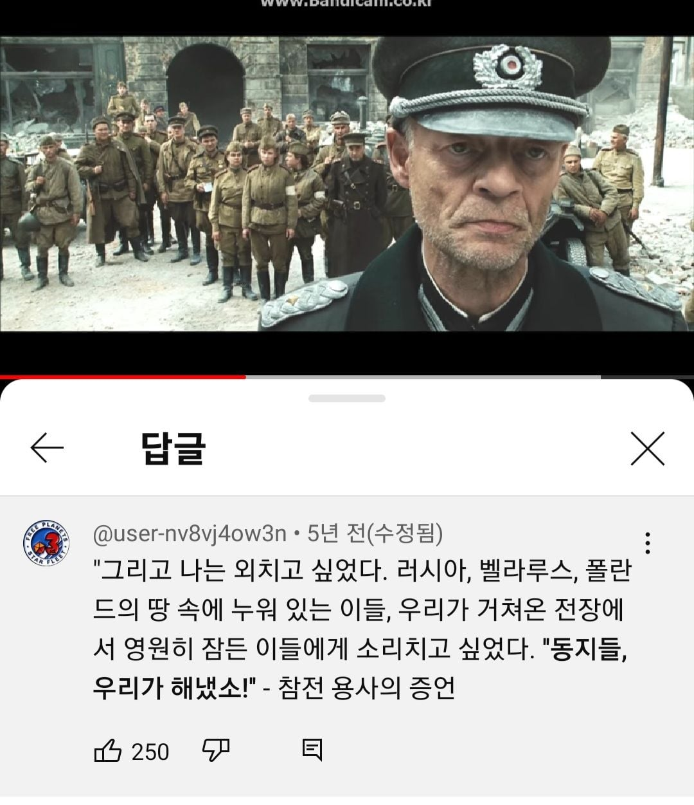

'소련인데 없는 말' ㅇㅈㄹㅋㅋㅋㅋㅋㅋㅋㅋㅋㅋㅋ
정보) 해당 명언을 남긴 인물은 '바실리 그로스만' 이라는 소련의 종군 기자로
그의 저서 '전쟁의 해들'에 나오는 명언이다.
심지어 소련은 한 국가가 아니라 공화국들이 모인 '연방국가'로
구성국 중 '러시아'도 포함된다 ㅅㅂㅋㅋㅋㅋㅋㅋㅋㅋㅋㅋㅋ

'소련인데 없는 말' ㅇㅈㄹㅋㅋㅋㅋㅋㅋㅋㅋㅋㅋㅋ
정보) 해당 명언을 남긴 인물은 '바실리 그로스만' 이라는 소련의 종군 기자로
그의 저서 '전쟁의 해들'에 나오는 명언이다.
심지어 소련은 한 국가가 아니라 공화국들이 모인 '연방국가'로
구성국 중 '러시아'도 포함된다 ㅅㅂㅋㅋㅋㅋㅋㅋㅋㅋㅋㅋㅋ
사실 연방(Federation, Федерация)보단 연맹(Union, Союз) 이 좀 더 맞는 번역이긴 한데 뭐 관용적으로 쓰던 게 정착된거라...
소비에트 사회주의 공화국 연맹의 가맹국 중 하나는 러시아 소비에트 연방 사회주의 공화국이 있었음.
저때에도 구호는 어머니 러시아를 위해서였는데
닉을 비스마르크로 해놓고 저것도 모른다고?
원래 하나만 아는 새끼들이 좆도 모르고 남한테 제일 목소리 큼
소련연방에 러시아 공화국이 있었고, 그 이전에는 러시아 제국이었다는 사실을 모르는 사람들이 있음 ㅋㅋㅋㅋ
러시아도 연방공화국이여서 연맹속 연방속 공화국(러시아 행정체계중 가장 큰 단위)이 있었음. 소련해체 이후 이런저런 국난과 헌정위기를 겪어서 러시아 연방도 터질뻔한 적이 있었음.
루스 공국 짜르 짜르~!
부대 생기던 초창기
스탈린그라드에서 베를린 국회의사당까지
모든 전투에 참전해서 살아남은 7명 같이 찍힌
사진이 갑자기 떠오르네
나머지 수천명 생존자는 다 보충병력
최초부터 최후까지 살아남은 7명은
죄다 소련 최고훈장 받았던데
프사가 비스마르크면 그래도 어느정도 서양사를 알텐데도 무지하네
소련은 소비에트 사회주의 공하국 연방의 준말.